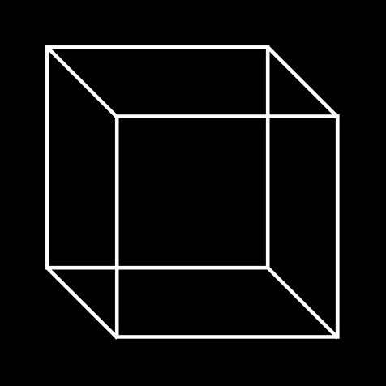
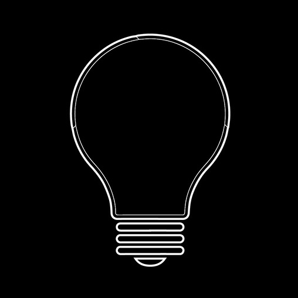
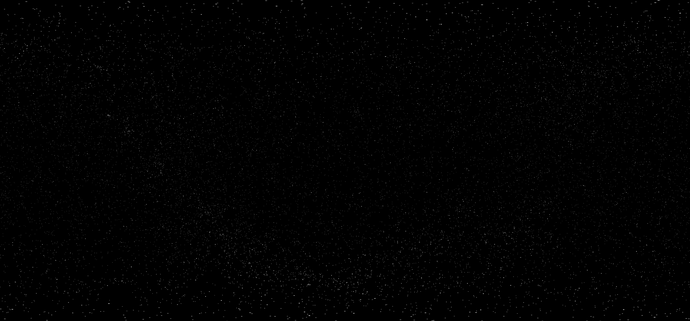
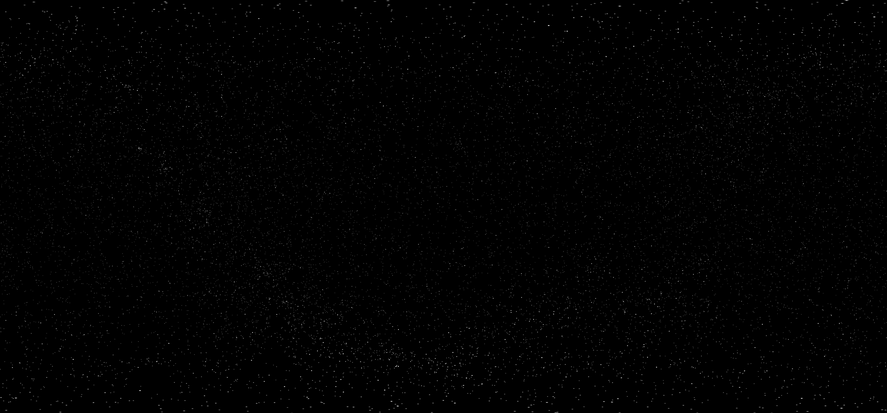
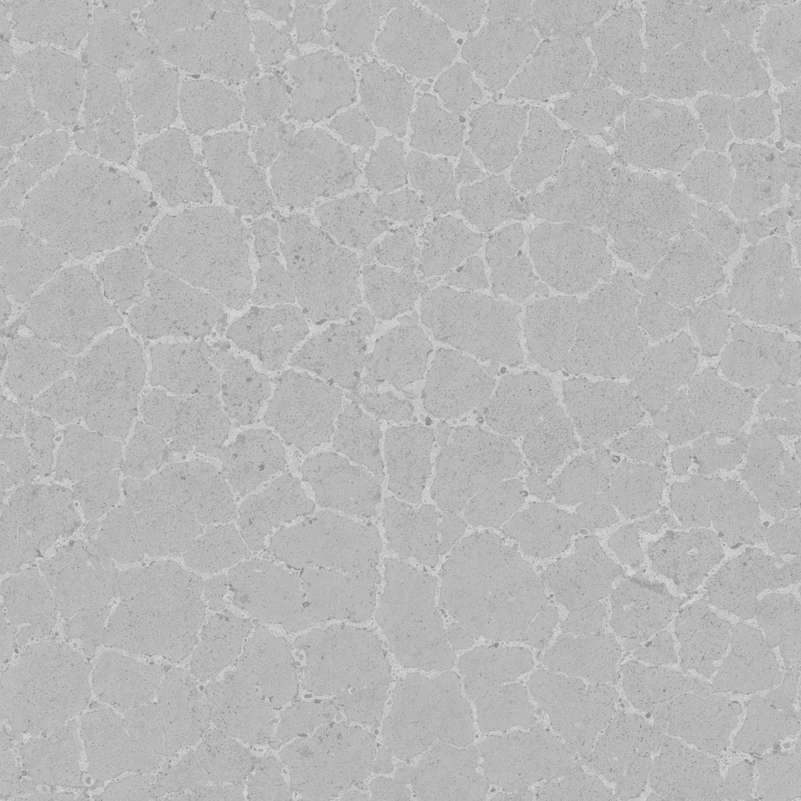
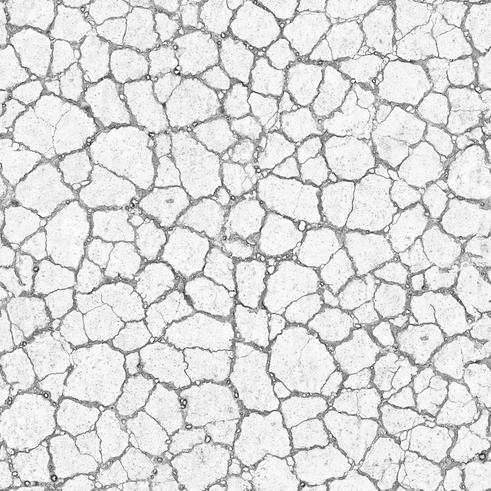
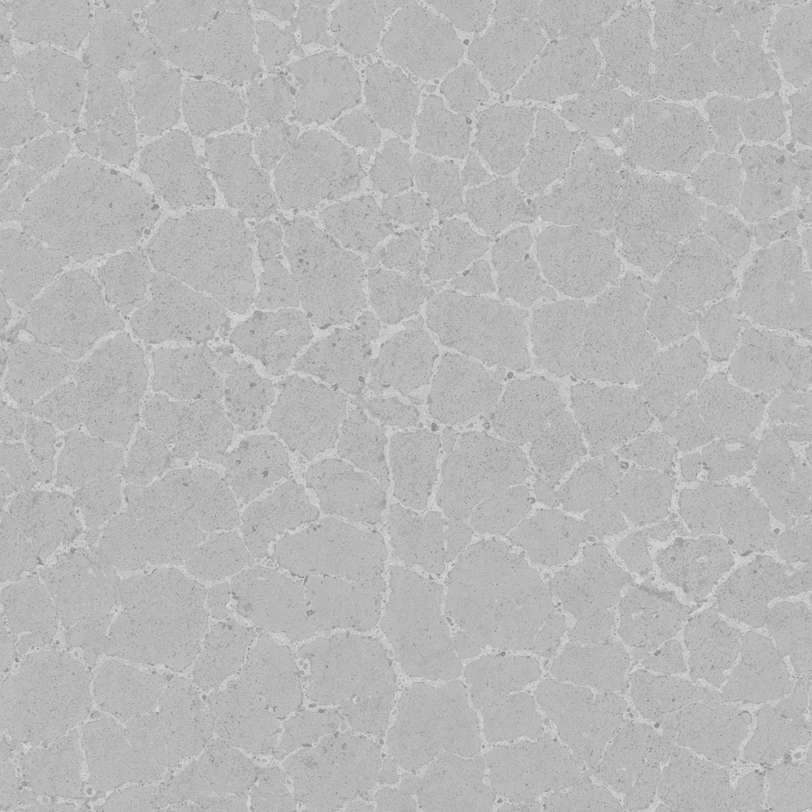
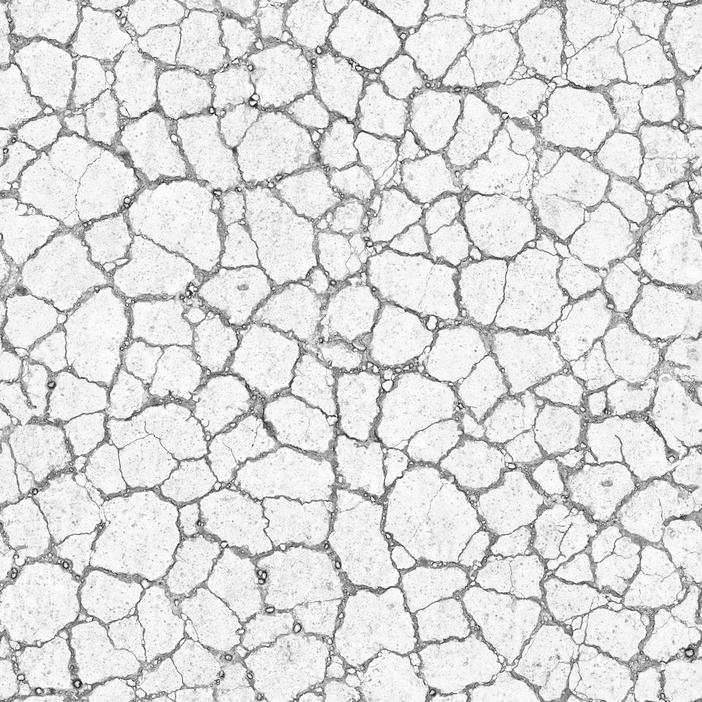

When once the sky was blue
a virtual experience
This performance is best experienced with headphones
We recommend being in an isolated environment to avoid interruptions

This performance is best experienced in total darkness.

Now it is the time to draw the curtains, switch off your lights, and
move if necessary.

 

 


